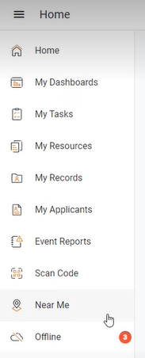
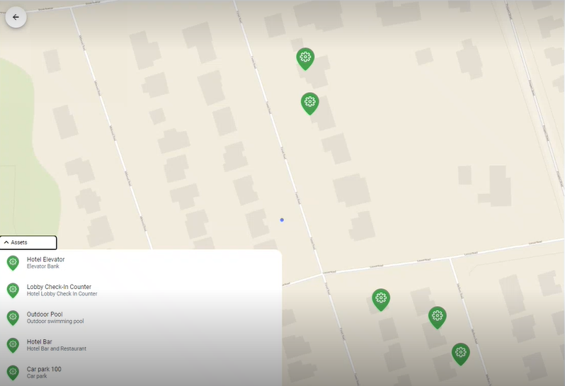

Near Me creates a virtual geographic map within myCority of the equipment assets to which the user (through role security) has access. This enables the user to view the details of equipment assets that are near his or her present location.
The two icons used for the assets are pre-defined in the GX2 Icons look-up table. The icons are myCorityEquip1_ico and myCorityEquip2_ico.
By default myCorityEquip1_ico is red, indicating that the asset has open (pending) actions, and myCorityEquip2_ico is green, indicating that the asset has no open actions. The icons can be reconfigured, if necessary.
The map is located in the new Near Me module, which must be added to the main myCority menu using the Personalize myCority action. Once added, the user can click the Near Me menu item to open the map.

The user can zoom out to expand the map and potentially see more assets, zoom in to narrow the view, or swipe up to see list of all assets on the map.
Note: myCority will update the user's location every 15 seconds, so if the user is moving while zoomed in on and viewing the map, the visible assets could change.

On the list or when hovering over an individual asset, each asset displays its own code and description (if defined). If the user clicks an asset, its record will open in the myCority Asset View layout. For information on configuring and pinning custom layouts, see the GX2 User Guide.